前言：起因是记得
file协议貌似可以相对路径的，然后想(file://,file://./)列当前目录的，发现不行，当时就以为不能相对路径了。然后file:///C:想列C:下的目录时，却列出了当前路径下的文件列表感觉很神奇，就去研究研究了
window 利用
\和/不用那么较真，java有转化的
file:///C: 列出的是C:\Users\jie\Desktop\Java\CVE_learn\CVE-2022-25845-In-Spring-main的目录文件
file:///C:/ 读取C:下的目录文件
file:///C:test3 读取C:\Users\jie\Desktop\Java\CVE_learn\CVE-2022-25845-In-Spring-main\test3文件内容
file:///C:../读取当前目录的上层目录
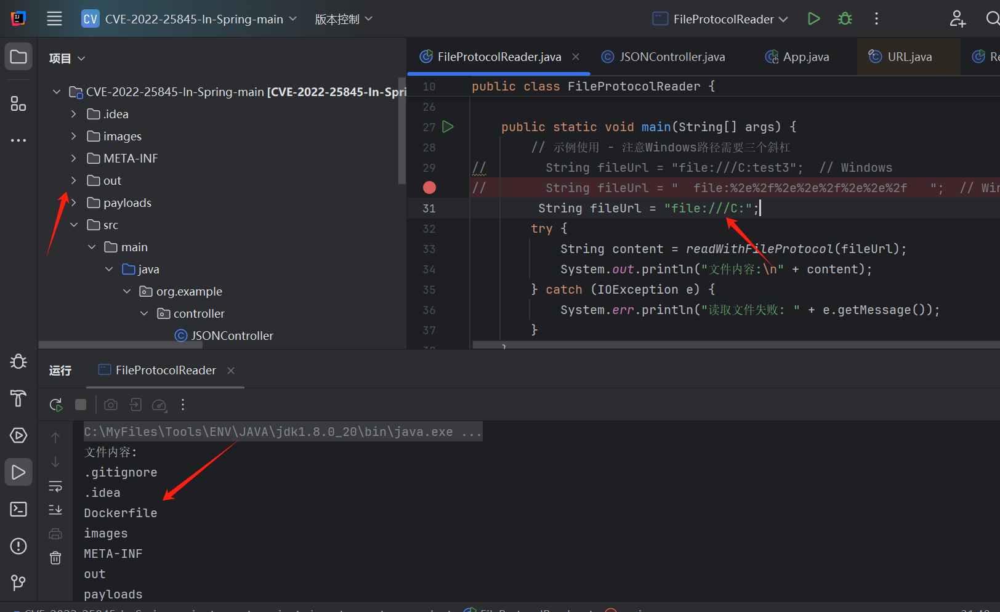
什么原因照成的捏，其实简单的
URL解析完后，会把解析的path传入new File()初始化
这里的path和prefixLength则是后面路径解析的关键
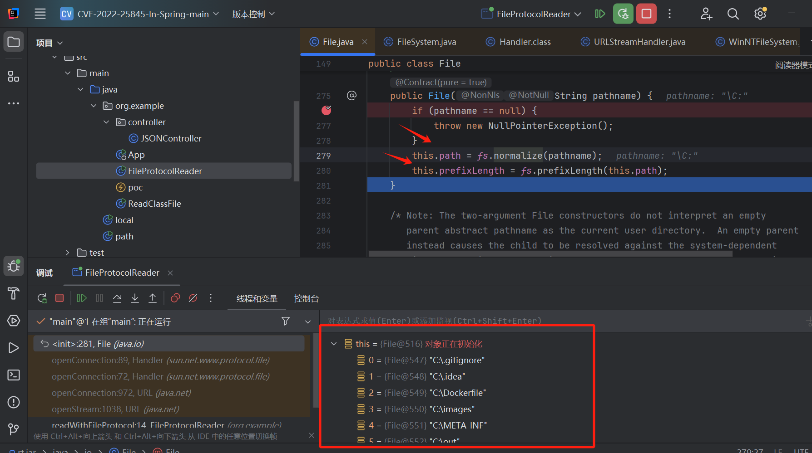
这里神奇吧，为啥这些目录文件就在这File里了？，明明初始化fs调用的那两个函数也没干什么，这里通过getAbsolutePath()获取实际路径（/C:这里可以理解为抽象路径）
File file = new File("/C:"); //这里path会解析成C: ,prefixLength为2
System.out.println(file.getAbsolutePath());
那看看getAbsolutePath()里是怎么处理的吧，最后在下方这里返回，什么意思呢
pl就是上方的prefixLength（只要是z:xxx这种格式就会返回2，z:xx/会返回3)，getUserPath()获取当前路径，ud就是当前路径最base的路径，然后判断我们的path是不是以ud值开头的，是的话就会把当前路径和我们C:xxx后面的xxx进行拼接返回
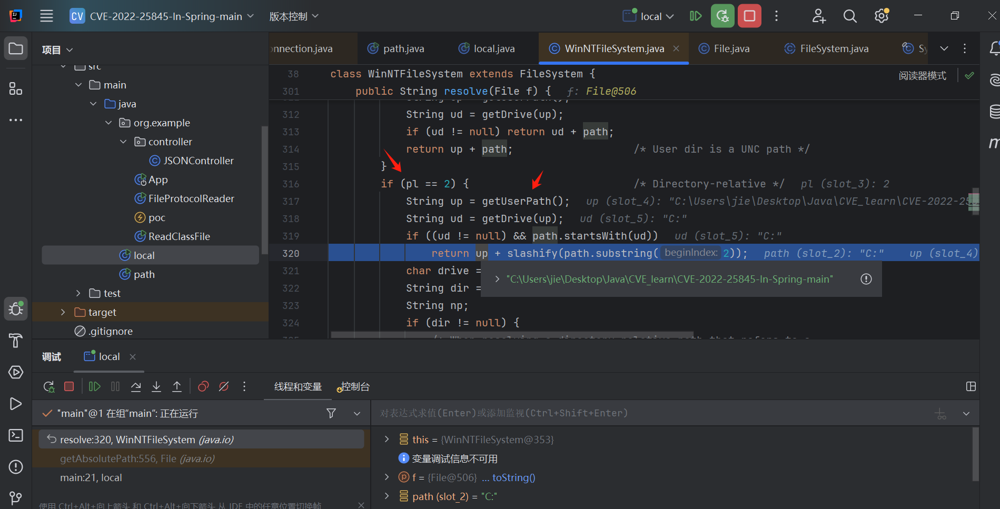
而这里path解析为C:所以这里返回的是当前路径，即
-
file:///C:test3 读取当前目录的test3文件
-
file:///C:../ 列出当前目录的
上层目录列表 -
利用条件
- 但是需要当前目录以
X:为开头 - 且file调用中的
C:要和当前目录的most base目录一致 - 默认只能window利用
- 但是需要当前目录以
为什么捏？
看到实际路径解析的地方，这里其实只有这3个地方会和当前目录有互动(笔者初心也是为了分析相对路径的)
第一处后面说，第二处会优先base目录没戏，看到第三处我们当前分析的地方（起始条件是pl为2）
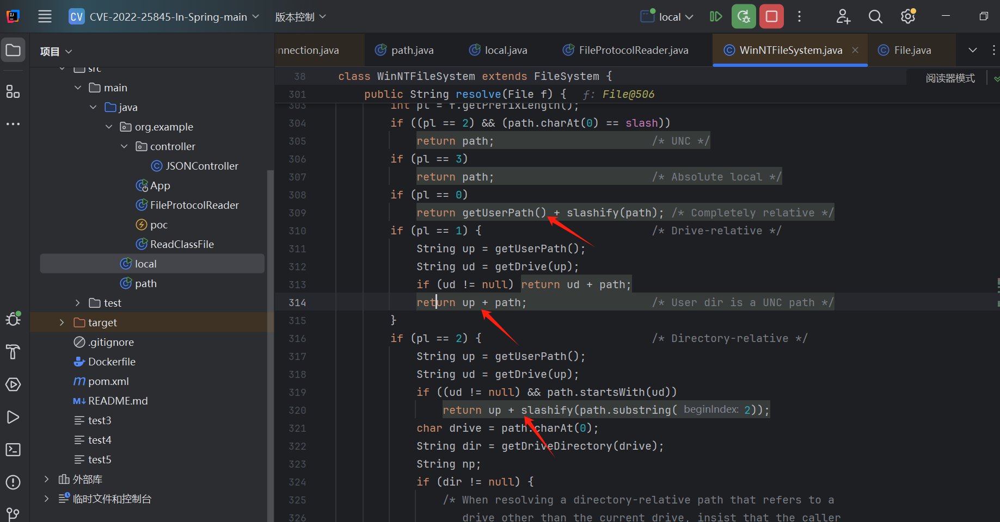
分析pl即prefixLength
this.prefixLength = fs.prefixLength(this.path);
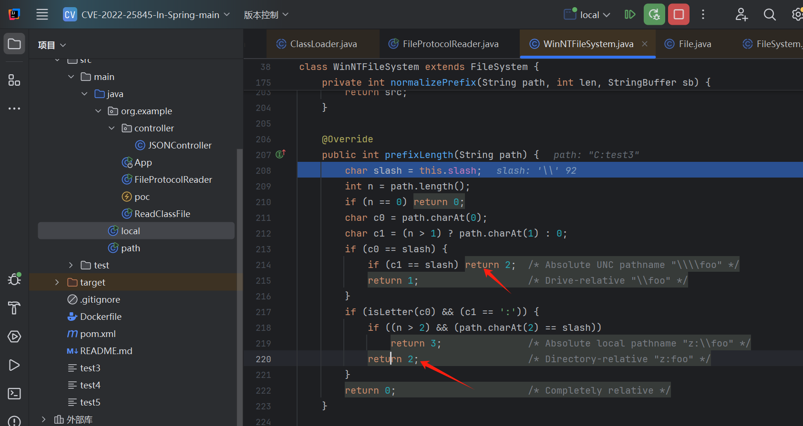
可以看到只有x:开头才能行的通，另一个\\开头不行在后续resolve()会直接return path的
所以这里应该是只能window才能用，毕竟有长度限制，他只判定你前两位字符，本来还想Users:xxx这种在linux尝试的，no！
然后为什么file:///C:可行，他传到new File()时是/C:，这是因为this.path = fs.normalize(pathname);对路径的转化，这里会把/转化成\，而/C:xx会转为C:xxx
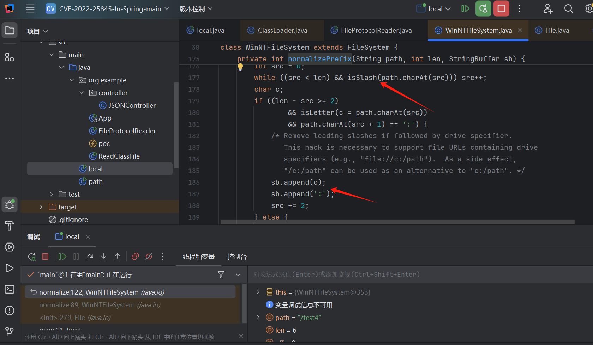
看了下fs.normalize()逻辑只有/X:xx这种可以逃脱/的控制！，为什么要逃过/呢，因为只要是/开头resolve()里就和相对路径无缘了，而下面这些传到new File()时都是以/开头的（笔者这里想找linux下可以用的方式）
file:///a/../
file://~:80/../
file://localhost:80/a/../
...
linux 探索&利用
即我们需要让URL解析时path不以/开头！，则分析下面这段代码，spec为我们传入的整个url，可以知道识别到path这里时如果是/开头直接g，authority（就是host）不为空的话也会g
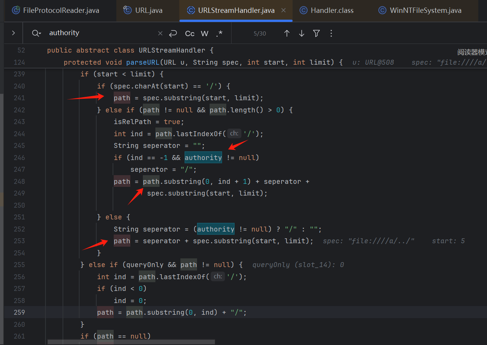
看到这里，file:///xxx常见使用会走这一块，会使authority从null变为""。导致上图authority!=null成立，所以我们file:///这种格式也别用啦！！！
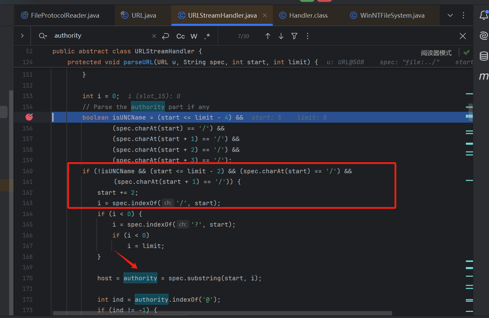
后面发现这个authority不影响后续代码，那直接不搞他呗
file:./ #成功实现
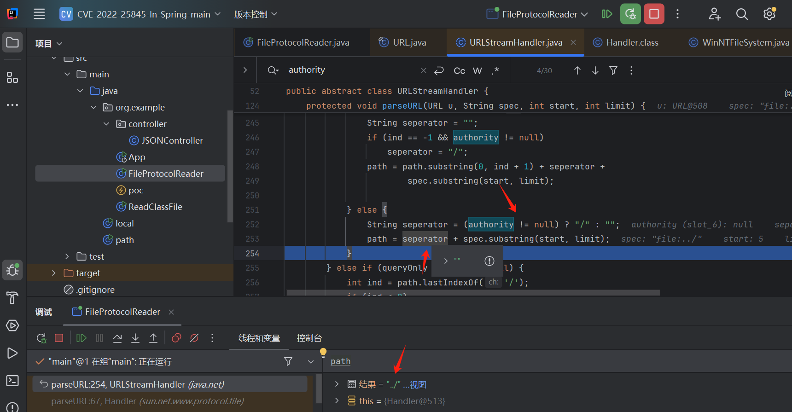
后续还有个地方，var3就是path，这里的if也不能进，直接给你硬拼两个\\（让host为空就能避免了）
注意这里的替换后面要考！
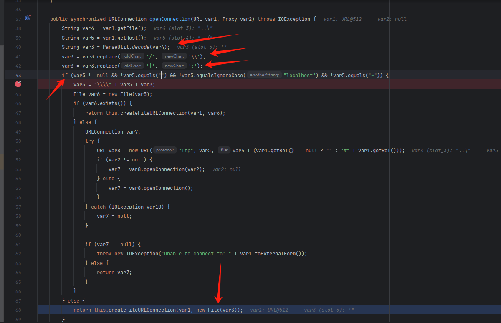
继续往下，java这里会判断是否是目录，为目录会list目录列表，文件则读取内容
这则为file协议的底层逻辑，即java file为什么能列目录
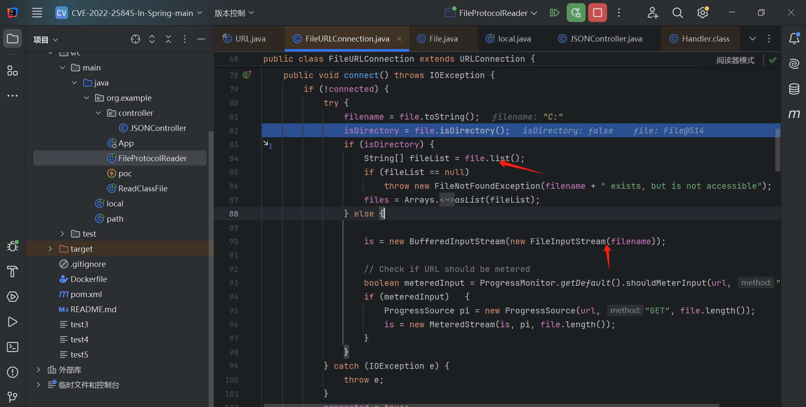
绕过
也就围绕这些
处理路径上的一些转化做文章咯，具体位置就不截图了 麻烦
-
绕过
file:开头url:file:///xxx 总所周知的，会截取读取url:后面的内容 #在解析协议之前 path=" file:///xxx " 会while循环删除首位的空白符号 #在解析协议之前 -
关键字符绕过
file:C|./ 绕过C: #在new File()之前 \|/ 相互替代,衍生出.\../.\..\../ 这个在new File()里面也有转化 url加密 ParseUtil.decode()会进行url解密 #在new File()之前 path=" file:%2e%2f%2e%2e%2f%2e%2e%2f " path=" netdoc:%2e%2f%2e%2e%2f%2e%2e%2f " netdoc平替 file 但是jdk11后删除了
url绕过
if (spec.regionMatches(true, start, "url:", 0, 4)) {
start += 4; }
因为这个比对会大小写都比对，所以url:可以大小写混着写Url:。然后这里toUpperCase()也存在转化问题，但是我跑了下，没找到url:这几个可以利用的字符
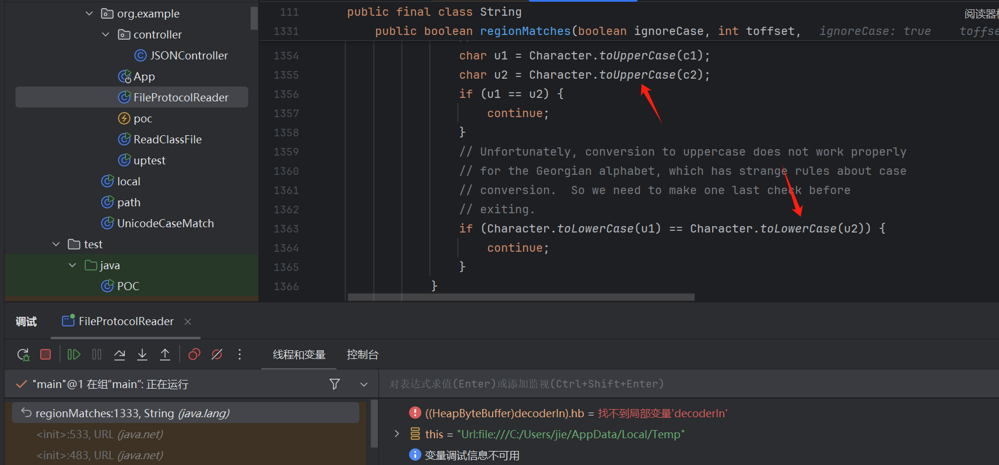
file绕过
url协议处理的时候也会toLowerCase()转化，所以这里file也可以大小写，但是有个巨神奇的地方。这里不是有i字符么。
System.out.println(Character.toLowerCase('İ')=='i'); //true
上面这个是我之前跑过的。但是这里利用不了
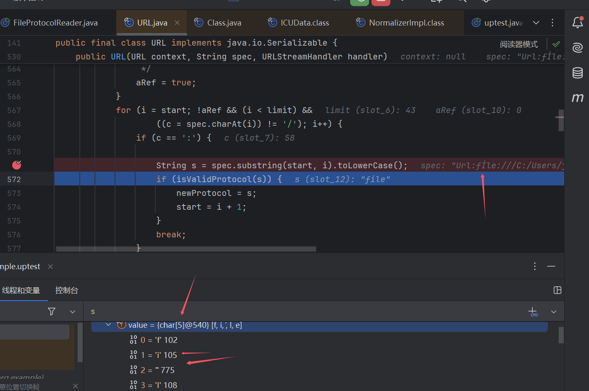
这里可以发现İ被转成了2位字符！ 然后我又去跑了下uincode字符。（想找能toLowerCase()解析成2位可用的字符)，发现只有İ是这样本身len为1 解析 后len为2
"İ".toLowerCase().length() //2
总结
file:path 貌似就是这样设计的，但是在网上找利用的时候没看到有写的。那么研究这个有什么用捏，感觉鸡肋呀hhh
也是file:///C:出乎我意外的回显，就好奇去看了看吧
感觉绕过可能稍稍微有那么一点点用？
file:path这种应该是有用的（测试雷池waf个人版）这种形式都不会记录的
之前阿里云waf会检查3个../../../这种，用上面应该也能绕过
可是我觉得能最有用的应该是绕过
..这种检查，可以二次url加密，到java代码层都是一层url加密的，而很多业务应该是直接检测..的嘿嘿但还是
鸡肋只能应用于file协议下。并不能做到路径拼接下的..绕过path=" Url:FiLe:%2e%2f%2e%2e%2f%2e%2e%2f "